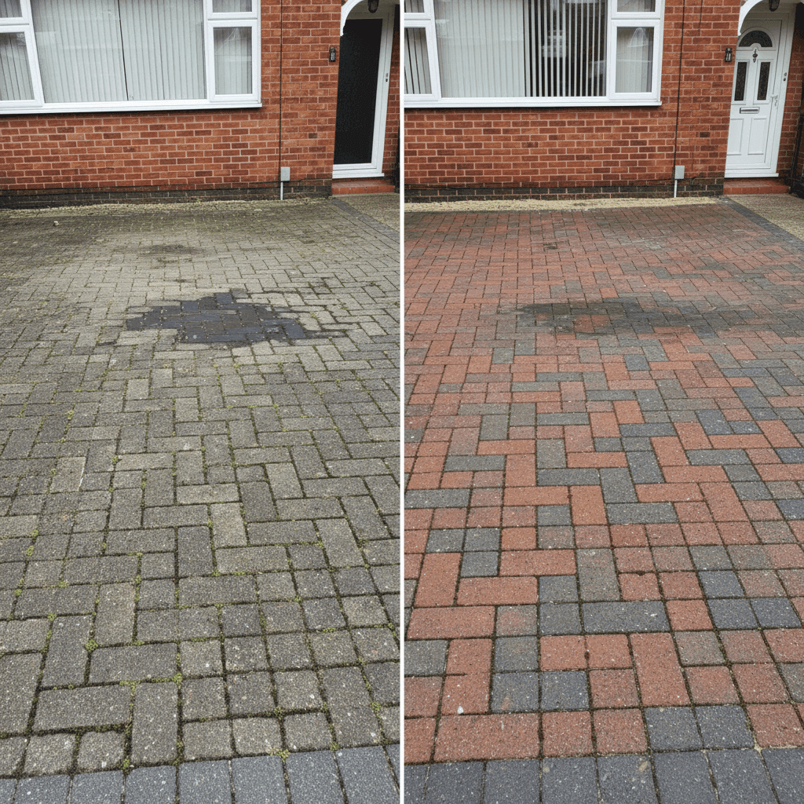

Transform Your Driveway with Professional Jetwashing
Your driveway is the first thing visitors see when they arrive at your property. Over time, driveways accumulate dirt, oil stains, moss, and algae that make them look tired and neglected. Our professional driveway cleaning service in Redhill, Reigate and across Surrey restores your driveway to its original condition, dramatically improving your property's appearance and value.
We clean all types of driveways including block paving, tarmac, concrete, pattern imprinted concrete, and resin-bound surfaces. Using professional pressure washing equipment and the correct techniques for each surface type, we safely remove even the most stubborn stains without damaging your driveway.
Benefits of Professional Driveway Cleaning
- Improved Curb Appeal - A clean driveway dramatically enhances your property's first impression and street appeal
- Increased Property Value - Well-maintained driveways contribute to higher property valuations and easier sales
- Safety Improvement - Remove slippery moss and algae that create dangerous walking surfaces
- Prevents Deterioration - Regular cleaning prevents organic growth that can damage driveway materials over time
- Cost-Effective Maintenance - Extends your driveway's lifespan, delaying expensive replacement costs
- Removes Stains - Eliminate oil leaks, tyre marks, and other unsightly staining
See the Difference
A typical driveway transformation in Surrey
Our Driveway Cleaning Process
1. Assessment & Preparation
We assess your driveway type and condition, identifying problem areas like oil stains or deep-set dirt. We protect surrounding areas and vegetation before starting.
2. Pre-Treatment
Stubborn stains and heavily soiled areas receive specialist pre-treatment to break down oil, grease, and organic matter effectively.
3. Pressure Washing
Using professional-grade equipment, we thoroughly clean your driveway at the correct pressure for your surface type, ensuring deep cleaning without damage.
4. Finishing & Inspection
We remove all debris, check the results, and address any remaining problem areas to ensure complete satisfaction.
Driveway Types We Clean in Surrey
Block Paving Driveways
Block paving is extremely popular in Redhill, Reigate, Horley, and throughout Surrey. We specialize in cleaning block paved driveways, removing weeds from joints, restoring original colours, and eliminating dark staining. For block paving, we also offer re-sanding and sealing services to protect your investment.
Tarmac & Asphalt Driveways
Tarmac driveways require careful pressure washing to avoid surface damage. Our experienced team uses appropriate pressure settings to clean tarmac effectively, removing oil stains and dirt while preserving the surface integrity.
Concrete Driveways
Concrete driveways are durable but can become badly stained over time. We remove oil stains, tyre marks, and organic growth from concrete surfaces, restoring their clean appearance.
Pattern Imprinted Concrete
Also known as stamped concrete, these decorative driveways need specialist care. We clean pattern imprinted concrete gently to preserve the sealant and pattern while removing dirt and stains.
Common Driveway Problems in Redhill & Reigate
Properties in Surrey face specific driveway cleaning challenges due to our climate and environment:
- Oil Stains - Vehicle leaks create stubborn dark patches that regular cleaning can't remove
- Moss & Algae Growth - Our damp climate encourages green organic growth, especially in shaded areas
- Block Paving Weeds - Weeds growing between blocks create an unkempt appearance
- Dark Staining - Black spots and general discolouration from organic matter
- Tyre Marks - Rubber deposits that build up over time
- General Dirt Accumulation - Traffic film, leaf stains, and everyday grime
Our professional driveway cleaning service addresses all these issues, restoring your driveway's appearance regardless of its current condition.
Local Service Areas
We provide professional driveway cleaning throughout Redhill, Reigate and surrounding areas including:
Redhill - Comprehensive driveway cleaning across all RH1 areas | Reigate - Specialist cleaning for premium Reigate Hill properties | Horley - Residential and Gatwick area properties | Dorking - Market town properties and rural driveways | Banstead - Affluent residential areas | Crawley - Residential and commercial driveway cleaning
We cover all RH postcodes (RH1-RH11), CR3 (Caterham), SM7 (Banstead), KT17-KT24 (Epsom/Leatherhead) and surrounding areas within a 20-mile radius of Redhill. View all service areas
Serving Redhill, Reigate & All Surrounding Surrey Areas
We're proud to serve Redhill and surrounding areas including RH1, RH2, and RH6 postcodes. Our team regularly works on properties near Redhill Railway Station, Memorial Park, and throughout the town centre. We also serve Reigate, Horley (near Gatwick), Banstead, Dorking, and all areas within a 20-mile radius of Redhill including Caterham, Epsom, Leatherhead, and Crawley.
As a local pressure washing company based in the RH1 area, we understand the specific challenges that Surrey driveways face - from moss growth in our damp climate to oil stains on block paving common in local residential developments. Our same-day quote service and flexible scheduling means we can respond quickly to your driveway cleaning needs across all of Surrey.
Get Your Free Driveway Cleaning Quote
Every driveway is different - size, surface type, condition, and any additional services all affect the final price. That's why we provide free, no-obligation quotes tailored to your specific property.
With our 2-hour callback guarantee, you won't be left waiting. Submit a quote request and we'll call you within 2 hours during business hours (Mon-Sat 8am-6pm) to discuss your requirements and provide accurate pricing. Request your free quote now.